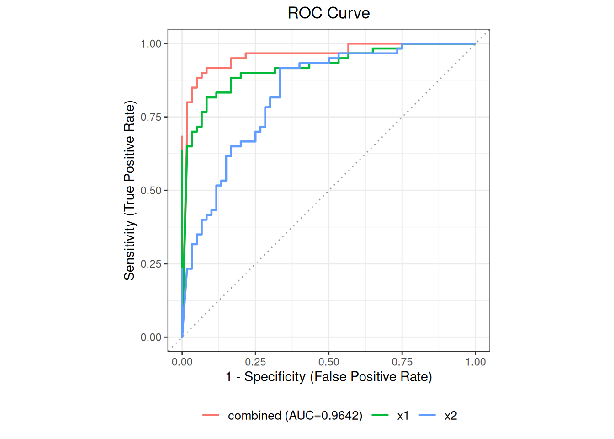

代码
library(ivdtools)
library(readr)单个标记物的诊断能力往往有限，多个标记物联合使用可提高整体区分能力。ivdtools 的 roc() 除单标记物 ROC 外，还支持用多元 Logistic 回归（mlr()）把多个标记物组合成一个联合得分， 计算其 AUC 并对新样本做阳性概率预测。
本文演示两个标记物（x1、x2）的联合分析：先比较单标记物 AUC，再拟合多元 Logistic 回归模型， 绘制多曲线 ROC，并预测新样本。联合模型在训练数据上的 AUC 是表观性能，推广前应在独立数据上 验证；参考变量必须是二分类。
library(ivdtools)
library(readr)| 函数 | 主要用途 | 关键输入或输出 |
|---|---|---|
roc() |
创建 ROC 对象 | cols 支持多个标记物 |
auc() |
单标记物 AUC | 逐列 |
mlr() |
多元 Logistic 回归 | cols、name，需先 auc() |
plot() |
ROC 曲线 | mlr="all" 叠加联合模型曲线 |
predict() |
预测阳性概率 | newdata、column_map |
summary() |
汇总 |
mlr_dat <- read_csv("./data/roc-multimarker.csv", show_col_types = FALSE)
mlr_dat <- as.data.frame(mlr_dat)
str(mlr_dat)'data.frame': 120 obs. of 4 variables:
$ sid: num 1 2 3 4 5 6 7 8 9 10 ...
$ ref: num 0 0 0 0 0 0 0 0 0 0 ...
$ x1 : num 5.51 3.19 8.13 6.16 11.12 ...
$ x2 : num 8.3 12.9 12.4 16.1 11.9 ...table(mlr_dat$ref)
0 1
60 60 数据包含 120 例（正、负各 60），两个定量标记物 x1、x2。
ro2 <- roc(mlr_dat, cols = c("x1", "x2"), reference = "ref", id = "sid")
ro2 <- auc(ro2)
AUC Table
Column AUC 95% CI Direction
------------------------------------------------------------
x1 0.9219 [0.8712, 0.9727] geq
x2 0.8322 [0.7587, 0.9057] geqro2$auc_tablex1 的 AUC ≈ 0.922，x2 的 AUC ≈ 0.832，单标记物中 x1 区分能力更强。
用两个标记物联合建模：
ro2 <- mlr(ro2, cols = c("x1", "x2"), name = "combined")
Multivariate Logistic Regression (combined)
--------------------------------------------------
Formula: reference_binary ~ x1 + x2
n = 120 (positive = 60, negative = 60)
AUC = 0.9642 [0.9298, 0.9985]
Coefficients:
Estimate Std. Error z value Pr(>|z|)
(Intercept) -13.6586717 2.7569949 -4.954188 7.263286e-07
x1 0.7638502 0.1549103 4.930919 8.184356e-07
x2 0.3949617 0.1064673 3.709700 2.075049e-04
* Note: AUC is evaluated on the same data used for fitting;
the estimate may be optimistic.ro2$mlr_results$combined$fit_summary
Call:
glm(formula = formula, family = binomial, data = model_data)
Coefficients:
Estimate Std. Error z value Pr(>|z|)
(Intercept) -13.6587 2.7570 -4.954 7.26e-07 ***
x1 0.7639 0.1549 4.931 8.18e-07 ***
x2 0.3950 0.1065 3.710 0.000208 ***
---
Signif. codes: 0 '***' 0.001 '**' 0.01 '*' 0.05 '.' 0.1 ' ' 1
(Dispersion parameter for binomial family taken to be 1)
Null deviance: 166.355 on 119 degrees of freedom
Residual deviance: 58.112 on 117 degrees of freedom
AIC: 64.112
Number of Fisher Scoring iterations: 7ro2$mlr_results$combined$auc[1] 0.9641667联合模型的 AUC ≈ 0.964（95% CI [0.930, 0.999]），高于任一单标记物，说明两标记物联合确有增益。
参数说明：
mlr(cols, name, ...)用二分类 Logistic 回归（glm）拟合选中标记物，name为 模型名（自动生成MLR01、MLR02…）；...透传给glm。必须先执行auc()才能调用mlr()。 系数解释为对数优势比；联合 AUC 在拟合所用数据上计算，属于表观性能。
plot(ro2, mlr = "all")
plot(ro2, mlr="all") 同时画出各单标记物与联合模型的 ROC 曲线，便于比较。
predict(ro2, newdata = data.frame(x1 = c(7, 12), x2 = c(16, 21)))predict() 返回各预测变量、阳性概率（pred_prob）、标准误与置信区间，以及默认阈值 0.5 下的 预测类别（pred_class）。两例分别得到 0.12 与 0.98 的阳性概率，与期望方向一致。
参数说明： 当
newdata的列名与建模时不一致时，用命名向量column_map映射 （如column_map = c(new_x1 = "x1")）。若对象中有多个模型，predict()需用mlr指定模型名。
summary(ro2)
ROC Analysis -- Summary
--------------------------------------------------
ROC Analysis
Data class: data.frame
Total rows: 120
Complete cases: 120
Reference: ref (binary)
Positive / Neg: 60 / 60
Evaluation cols: 2 (x1, x2)
Duplicate IDs: none
Analysis slots:
[ ] Describe
[x] AUC
[ ] Cutoff
[x] MLR
AUC Table
Column AUC 95% CI Direction
------------------------------------------------------------
x1 0.9219 [0.8712, 0.9727] geq
x2 0.8322 [0.7587, 0.9057] geq
MLR Results
Multivariate Logistic Regression (combined)
--------------------------------------------------
Formula: reference_binary ~ x1 + x2
n = 120 (positive = 60, negative = 60)
AUC = 0.9642 [0.9298, 0.9985]
Coefficients:
Estimate Std. Error z value Pr(>|z|)
(Intercept) -13.6586717 2.7569949 -4.954188 7.263286e-07
x1 0.7638502 0.1549103 4.930919 8.184356e-07
x2 0.3949617 0.1064673 3.709700 2.075049e-04
* Note: AUC is evaluated on the same data used for fitting;
the estimate may be optimistic.mlr() 一次拟合给定标记物集合；多组变量比较应在方案中预设，避免反复试错。